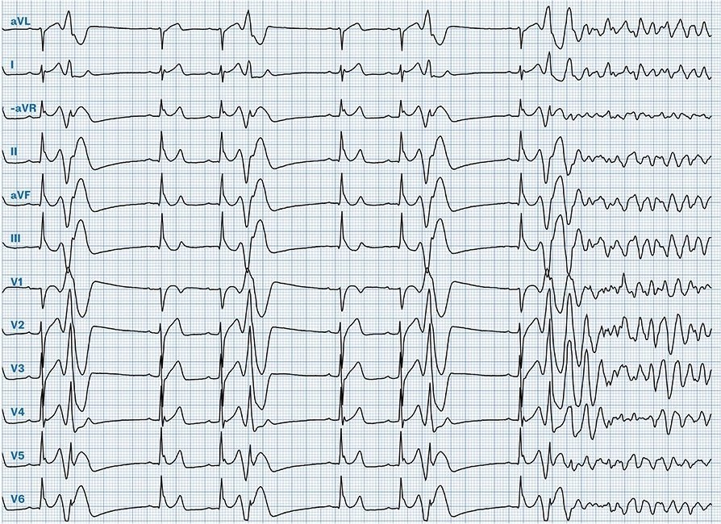
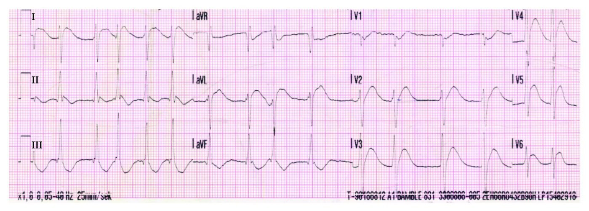
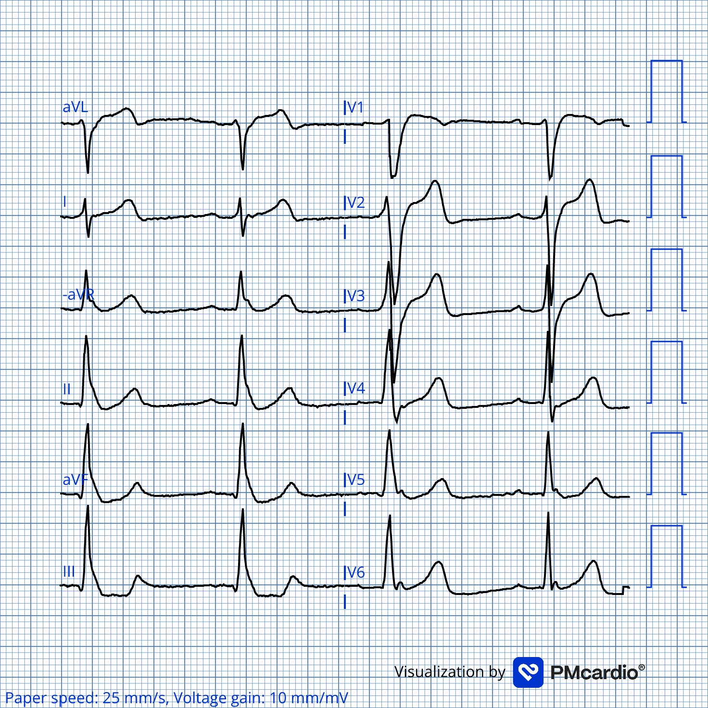
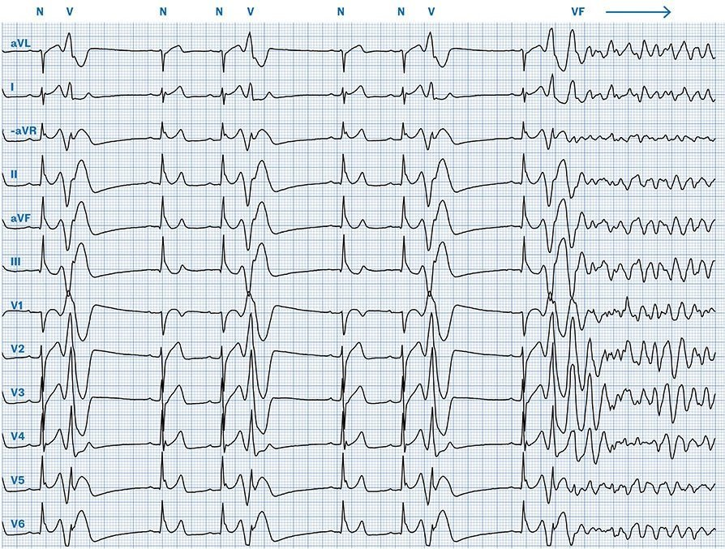
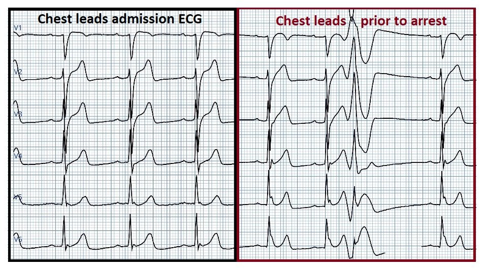
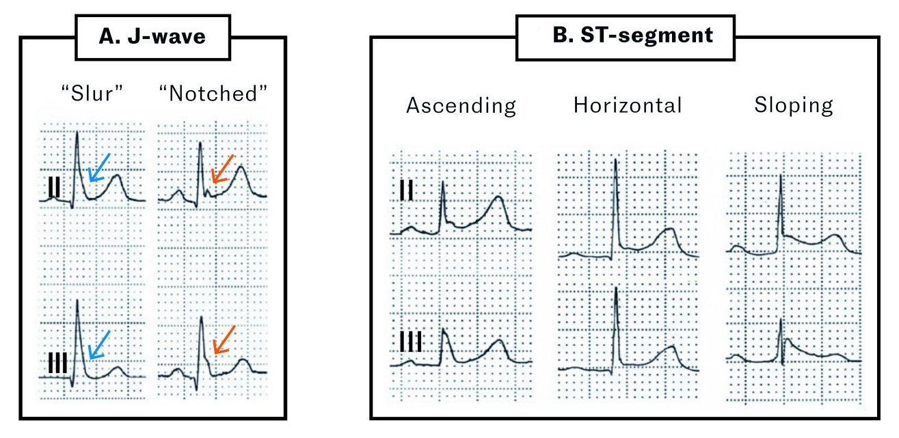
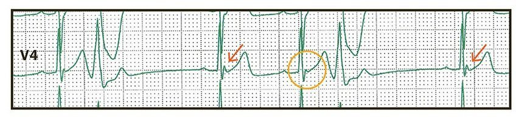

05/02/2026 — Nam giới ngoài 30 tuổi bị ngừng tim. Nguyên nhân là gì?
Bản dịch tiếng Việt của bài "A male in his 30s with cardiac arrest. What is the etiology?" – Dr. Smith’s ECG Blog. Giữ nguyên toàn bộ 6 hình ảnh của bản gốc.


Tác giả: Magnus Nossen
Một người đàn ông ngoài 30 tuổi được vợ phát hiện nằm bất tỉnh trên giường. Bà lập tức tiến hành hồi sinh tim phổi (CPR). Khi đến nơi, đội cấp cứu ngoài viện (EMS) ghi nhận bệnh nhân đang rung thất (VFib). Tái lập tuần hoàn tự nhiên (ROSC) đạt được sau khoảng 15 phút hồi sức. Bệnh nhân vẫn không đáp ứng và được đặt nội khí quản. Điện tâm đồ sau đây được ghi sau ROSC.
Điện tâm đồ #1


Điện tâm đồ ghi trên xe cứu thương sau khi tái lập tuần hoàn tự nhiên. Điện tâm đồ cho thấy rung nhĩ kèm ST chênh lên không điển hình ở các chuyển đạo V2–V6, I và aVL.
Smith: có sóng J nổi bật một cách kỳ lạ ở II và aVF. Có những sóng trông giống sóng T tối cấp ở I, aVL và V2-V6, kèm nhiều ST chênh lên, đồng thời có ST chênh xuống (STD) soi gương ở III và aVF. Luôn phải hơi hoài nghi nếu điện tâm đồ được ghi NGAY sau ROSC, vì tình trạng dòng chảy thấp có thể tạo ra một điện tâm đồ trông như OMI ngay cả khi không có OMI. Trừ khi không còn gì nghi ngờ, tôi khuyên nên chờ 10-15 phút rồi ghi lại.
Ca bệnh tiếp diễn:
Bệnh nhân ổn định trong suốt quá trình vận chuyển đến khoa cấp cứu (ED), không có thêm cơn rung thất nào. Bệnh nhân đến viện trong tình trạng đã đặt nội khí quản, đang truyền adrenalin liên tục để duy trì huyết áp động mạch trung bình (MAP) đầy đủ.
Điện tâm đồ ghi lúc nhập viện (điện tâm đồ #2)


Điện tâm đồ lúc nhập viện có chất lượng kém. Ở đây đã dùng ứng dụng PM cardio để tối ưu hóa hình ảnh. Lúc này là nhịp xoang (SR) và ST chênh xuống không đặc hiệu ở các chuyển đạo dưới. Điện tâm đồ này được ghi khoảng 45 phút sau ROSC, trong khi đang truyền adrenalin liên tục — điều có thể đã góp phần gây ra ST chênh xuống không đặc hiệu ở thành dưới.
Smith: đúng như nghi ngờ, các dấu hiệu OMI phần lớn đã biến mất. Vậy đây có thể là một OMI đã tái tưới máu, hoặc là một ca mà tình trạng dòng chảy thấp đã giả OMI. Dù là trường hợp nào, việc chuyển vào phòng thông tim (cath lab) cũng rất hợp lý.
Siêu âm tim tại giường ở khoa cấp cứu cho thấy chức năng tâm thu bình thường và không có rối loạn vận động thành. Smith: điều này làm OMI ít có khả năng hơn, tùy thuộc vào chất lượng hình ảnh và kinh nghiệm của người làm siêu âm.
Ca bệnh tiếp diễn: Do có rung thất và ST chênh lên (STE) không điển hình sau ROSC, bệnh nhân được chụp mạch vành; kết quả không thấy dấu hiệu xơ vữa động mạch hay co thắt mạch vành nào. Đánh giá thêm bằng CT đã loại trừ bệnh lý động mạch chủ, thuyên tắc phổi và tai biến mạch máu não. Điện giải huyết thanh trong giới hạn bình thường.
Troponin T lúc nhập viện là 349ng/L và đạt đỉnh ở mức khiêm tốn 619ng/L. Giá trị troponin này sau ROSC không cho biết gì về nguyên nhân ngừng tim, vì các giá trị ở mức hàng trăm có thể xuất hiện do dòng chảy mạch vành bị ngưng trệ bởi chính tình trạng ngừng tim.
Bệnh nhân được nhập đơn vị hồi sức tích cực tim mạch (CICU) mà chưa rõ nguyên nhân ngừng tim.
Ngày hôm sau, khi đang nằm ở CICU, các thay đổi điện tâm đồ động (dynamic) được ghi nhận trên monitor theo dõi liên tục 12 chuyển đạo, dẫn đến một cơn ngừng tim trong bệnh viện. Một điện tâm đồ 12 chuyển đạo ghi ngay trước cơn ngừng tim (điện tâm đồ #3) được trình bày dưới đây, tiếp theo là Hình #1 so sánh các chuyển đạo trước tim của điện tâm đồ #2 (lúc nhập viện) và điện tâm đồ #3 (trước khi ngừng tim)
Các bản ghi này cho thấy những manh mối tinh tế nhưng quan trọng cho chẩn đoán và nguyên nhân nền gây ngừng tim ở bệnh nhân này. Hãy phóng to hình và nhìn kỹ. Điều gì có thể là nguyên nhân gây ngừng tim?
Điện tâm đồ #3


Điện tâm đồ ngay trước khi ngừng tim (định dạng Cabrera, tốc độ giấy 25 mm/s). Nhịp xoang, tần số 65 nhịp/phút. Các nhát xoang (đánh dấu N) có trục thẳng đứng và phức bộ QRS hẹp. Khoảng PR bình thường (174 ms), khoảng QT hiệu chỉnh cũng vậy (414 ms), và không có thay đổi đoạn ST hay sóng T do thiếu máu cục bộ. Có nhiều ngoại tâm thu thất đơn ổ (PVC, đánh dấu V), xảy ra với khoảng ghép tương đối ngắn (400 ms) và trùng vào sóng T (hiện tượng R trên T). Thấy rõ sóng J ở các chuyển đạo dưới và bên. Về cuối bản ghi, một PVC R trên T khởi phát rung thất (đánh dấu VF).
Hình #1


Các chuyển đạo ngực lúc nhập viện (bên trái) so với các chuyển đạo ngực trước cơn ngừng tim xảy ra vào ngày hôm sau khi nhập viện. Hãy chú ý sự phân bố lan rộng và biên độ thay đổi rõ rệt của sóng J trước khi ngừng tim!
Bàn luận:
Bệnh nhân này được chẩn đoán hội chứng tái cực sớm (Early Repolarization Syndrome, ERS). ERS là một hội chứng rối loạn nhịp, trong đó hình ảnh tái cực sớm trên điện tâm đồ đi kèm với các rối loạn nhịp thất ác tính hoặc ngừng tim đột ngột. Về bản chất, đây là nhóm “ác tính” của tái cực sớm. Để chẩn đoán ERS, cần có hình ảnh tái cực sớm (Early Repolarization Pattern, ERP) ở một bệnh nhân đã được ghi nhận nhịp nhanh thất đa dạng hoặc rung thất và có tim bình thường về cấu trúc. Phải loại trừ các nguyên nhân khác gây rối loạn nhịp ác tính mới chẩn đoán được ERS (1). ERS là một chẩn đoán loại trừ, không nên đưa ra khi chưa thăm dò chẩn đoán kỹ lưỡng. Nếu thăm dò toàn diện không tìm ra nguyên nhân rõ ràng nào khác gây nhịp nhanh thất đa dạng (PMVT) hoặc rung thất, và bệnh nhân có ERP trên điện tâm đồ — khi đó chẩn đoán ERS.
Tái cực sớm RẤT phổ biến, và khi được phát hiện tình cờ ở người không triệu chứng thì không cần thăm dò thêm. ERP được định nghĩa bởi sự hiện diện của sóng J trên điện tâm đồ (1). Sóng J có nhiều hình thái khác nhau, như trình bày ở Hình #2.
Hình #2


Các biểu hiện khác nhau của tái cực sớm. Chỉnh sửa từ Antzelevitch và cs.. A) Sóng J có thể rõ nét (mũi tên đỏ) hoặc biểu hiện như một biến dạng phần cuối phức bộ QRS, với sóng J “bị vùi” ở cuối phức bộ (mũi tên xanh). B) ST chênh lên thường gặp trong các hình ảnh tái cực sớm nhưng không phải là tiêu chuẩn bắt buộc. Đoạn ST có thể đi lên, nằm ngang hoặc đi xuống, trong đó dạng đi xuống liên quan chặt chẽ hơn với rối loạn nhịp.
Hội chứng tái cực sớm và hội chứng Brugada đều là bệnh kênh ion, và cùng được xếp vào nhóm các hội chứng sóng J (J‑wave syndromes) (1). Trong hội chứng Brugada, sóng J nổi bật thấy ở các chuyển đạo trước tim phải V1–V3, tạo nên hình ảnh như ST chênh lên ở các chuyển đạo này. Trong ERS, sóng J thường thấy ở các chuyển đạo dưới-bên.
ERS và hội chứng Brugada có chung nhiều đặc điểm lâm sàng; ngừng tim thường xảy ra lúc nghỉ ngơi hoặc trong những giai đoạn trương lực phế vị tăng cao, và thường được khởi phát bởi các ngoại tâm thu thất (PVC) có khoảng ghép ngắn. Trong giai đoạn trước khi ngừng tim, thường quan sát thấy sóng J tăng biên độ và PVC thường xuyên. Một dấu ấn điện tâm đồ khác liên quan đến tăng nguy cơ rối loạn nhịp trong ERS là tăng biên độ sóng J sau ngoại tâm thu (post‑extrasystolic J‑wave augmentation), hiện diện trên điện tâm đồ #2 và được trình bày chi tiết hơn trong hình dưới đây.
Hình #3


Dải nhịp chuyển đạo V4 ngay trước khi ngừng tim. Các phức bộ QRS đứng sau một khoảng ngưng sau ngoại tâm thu, tức là có khoảng RR kéo dài, cho thấy sóng J nổi bật hơn (mũi tên) so với các phức bộ QRS không đứng sau một khoảng RR kéo dài (vòng tròn). Hiện tượng này gọi là tăng biên độ sóng J sau ngoại tâm thu và là một dấu ấn nguy cơ rối loạn nhịp trong ERS (2).
Bệnh nhân được điều trị bằng tạo nhịp nhĩ ở tần số 90 nhịp/phút để phòng nhịp chậm và ức chế ngoại tâm thu thất, nhờ đó đã ngăn chặn thành công các cơn rung thất tiếp theo. Đáng tiếc, bệnh nhân trong ca này đã bị tổn thương não nặng do thiếu oxy từ cơn ngừng tim ngoài bệnh viện, và sau khi đánh giá tiên lượng, cuối cùng đã quyết định ngừng các biện pháp hỗ trợ duy trì sự sống
Kết luận:
Chúng ta có nên lo ngại về tái cực sớm và thông báo cho bệnh nhân rằng hình ảnh điện tâm đồ của họ có liên quan đến đột tử do tim hay không? Câu trả lời là không.
Tái cực sớm và sóng J là những dấu hiệu cực kỳ phổ biến. Rung thất “vô căn” rất hiếm gặp, với tần suất khoảng 3 trên 100.000 người-năm ở những người ≤45 tuổi. Ở những người có tái cực sớm, tần suất chỉ tăng nhẹ lên 11 trên 100.000 người-năm (3).
Nói cách khác, ERP gần như luôn là một phát hiện tình cờ, không có hậu quả lâm sàng, và sóng J gần như luôn lành tính. Chỉ trong những tình huống rất hiếm và trong một số bối cảnh nhất định, chúng mới có thể chỉ điểm nguy cơ rối loạn nhịp — điều này đặc biệt đúng khi sóng J rõ rệt, tăng biên độ và đi kèm nhịp chậm. Điều này có thể xảy ra trong các bối cảnh như hội chứng tái cực sớm (ERS), hội chứng Brugada (BrS) hoặc hạ thân nhiệt.
Đường link tới báo cáo ca bệnh đầy đủ. A man in his 30s with cardiac arrest | Tidsskrift for Den norske legeforening
Những điểm cần học:
- ERP và sóng J cực kỳ phổ biến. Khi xuất hiện đơn độc, ERP KHÔNG phải là lý do để thăm dò thêm.
- ERS là một chẩn đoán loại trừ và chỉ nên được cân nhắc khi các nguyên nhân tiềm tàng khác gây rung thất đã được loại trừ và có hình ảnh tái cực sớm được ghi nhận trên điện tâm đồ.
- ERS và BrS tương tự nhau về lâm sàng, đặc trưng bởi sóng J và liên quan đến đột tử do tim. ERS và BrS cùng được gọi là các hội chứng sóng J.
- Xử trí ERS (và BrS) tập trung vào cấy máy khử rung tim cấy được (ICD). Quinidin là thuốc được lựa chọn ở bệnh nhân có gánh nặng rối loạn nhịp cao.
Tài liệu tham khảo:
- Antzelevitch C, Yan GX, Ackerman MJ và cs. J-Wave syndromes expert consensus conference report: Emerging concepts and gaps in knowledge. Tạp chí J Arrhythm 2016; 32: 315–39. [PubMed][CrossRef]
- Nam GB, Kim YH, Antzelevitch C. Augmentation of J waves and electrical storms in patients with early repolarization. Tạp chí N Engl J Med 2008; 358: 2078–9. [PubMed][CrossRef]
- Aagaard P, Sydow J, Börjesson M và cs. Early repolarization in ECG. Definition, prevalence and prognostic significance. Tạp chí Lakartidningen 2015; 112: DLUT. [PubMed]
= = =
======================================
BÌNH LUẬN CỦA TÔI, bởi KEN GRAUER, MD (5/2/2026 ):
Ca bệnh đáng tiếc hôm nay điểm lại diễn biến của một cơn ngừng tim không có người chứng kiến xảy ra tại nhà bệnh nhân. Mặc dù ban đầu đã được đội cấp cứu hồi sức thành công — người đàn ông ngoài 30 tuổi trước đó khỏe mạnh này cuối cùng đã tử vong do tổn thương não nặng vì thiếu oxy, hậu quả của khoảng thời gian kéo dài cho đến khi bệnh nhân được phát hiện.
- Thú nhận của tôi: Bàn luận của Dr. Nossen thú vị và sâu sắc là vậy — nhưng với tôi, nó đặt ra nhiều câu hỏi hơn là trả lời. Tôi thấy chủ đề ERS (các hội chứng tái cực sớm — Early Repolarization Syndromes) không chỉ hết sức khó hiểu — mà còn phức tạp thêm bởi nhu cầu phải phân biệt thực thể ERS có khả năng gây tử vong — với thực thể nghe na ná nhưng gần như luôn luôn lành tính là ERP (hình ảnh tái cực sớm — Early Repolarization Pattern).
= = =
Xin nhắc lại định nghĩa được chấp nhận về ERS (hội chứng tái cực sớm) mà Dr. Nossen đã đưa ra trong phần bàn luận ở trên:
- ERS — là một hội chứng rối loạn nhịp, trong đó bệnh nhân có ERP (“hình ảnh” tái cực sớm) trên điện tâm đồ và đã có một hoặc nhiều rối loạn nhịp ác tính và/hoặc một cơn ngừng tim đột ngột.
- Điều cốt yếu trong định nghĩa ERS này — là sự hiện diện của ERP. Nhưng ERP là gì?
= = =
ERP là gì? (hình ảnh tái cực sớm — Early Repolarization Pattern)?
Khái niệm ER (tái cực sớm — Early Repolarization) từng rất đơn giản. Giờ thì không còn nữa …
- Từng có sự đồng thuận giữa các bác sĩ lâm sàng rằng ER ( = “tái cực sớm” ) là một dấu hiệu phổ biến, thường gặp nhất ở người trẻ trưởng thành vốn khỏe mạnh (đặc biệt là người da đen) — trong đó có ST chênh lên nhẹ, đôi khi ở nhiều chuyển đạo — thường kèm khía điểm J — với tiên lượng lâu dài lành tính (đó là lý do nhiều người gọi thực thể này là “BER” = tái cực sớm lành tính — Benign Early Repolarization).
- Ý nghĩa lâm sàng chủ yếu của việc nhận biết ER — từng chỉ giới hạn ở việc phân biệt dấu hiệu điện tâm đồ phổ biến, lành tính này với viêm màng ngoài tim cấp và nhồi máu cấp.
- Mọi thứ đã thay đổi vào năm 2008 — khi Haïssaguerre và cs. phát hiện tỷ lệ ER tăng ở các bệnh nhân rung thất vô căn (N Engl J Med 358:2016-2023, 2008). Kể từ đó — thách thức là cố gắng phân biệt giữa dấu hiệu điện tâm đồ rất phổ biến là tái cực sớm với những người không triệu chứng có ERP nhưng mang nguy cơ đáng kể xuất hiện rối loạn nhịp ác tính.
- Như tôi đã nêu và dẫn nguồn trong Bình luận của tôi ở cuối trang của bài ngày 23 tháng Năm năm 2022 trên Dr. Smith’s ECG Blog — tỷ lệ hiện mắc của ER trong dân số chung được trích dẫn dao động trong khoảng từ 2 đến 31% — với tỷ lệ phần trăm này phụ thuộc vào tuổi, giới, chủng tộc, khác biệt thuật ngữ, và đặc biệt là mức độ chênh lên của điểm J được chấp nhận là “đủ điều kiện” theo định nghĩa. Riêng sự dao động về tỷ lệ hiện mắc của ER này đã làm nổi bật sự thiếu đồng thuận giữa các bác sĩ lâm sàng về điều gì là và không là tiêu chuẩn của “tái cực sớm” (và điều này làm phức tạp thêm định nghĩa “ERS” — vì tiêu chuẩn ERS phụ thuộc vào sự hiện diện của ERP).
- Macfarlane, Antzelevitch, Haissaguerre, Tikkanen, Wellens và cs. — trong Bài báo Đồng thuận năm 2015 của họ (JACC 66(4):470-477, 2015) — đã thừa nhận sự thiếu thống nhất này giữa các bác sĩ lâm sàng trong việc định nghĩa ERP — và các chuyên gia này đã đưa ra định nghĩa ERP mới của họ:
- LƯU Ý #1: Với những độc giả của Blog này muốn làm rõ điều mà các tác giả này xác định là “khía” (notch) và/hoặc “trát đậm” (slur) — có rất nhiều hình minh họa hữu ích trong bài báo JACC này. Dù vậy — các thông số đo lường dùng để định nghĩa những dấu hiệu điện tâm đồ này phức tạp hơn mức tôi muốn khuyến nghị cho bác sĩ lâm sàng bận rộn trong thực hành.
- LƯU Ý #2: Dù đã dành hàng giờ cố gắng sàng lọc y văn về ERP/ERS — tôi vẫn không chắc liệu có khác biệt nào giữa việc dùng thuật ngữ “ER“ (tái cực sớm) và “ERP“ (hình ảnh tái cực sớm) hay không. Vì vậy, tôi dùng các thuật ngữ này thay thế cho nhau.
- LƯU Ý #3: Theo định nghĩa mới của Macfarlane và cs. — ST chênh lên không còn là điều bắt buộc để thỏa mãn tiêu chuẩn của “ERP”. Tất cả những gì cần có là “trát đậm” hoặc “khía” đáp ứng các đặc điểm nêu dưới đây.
= = =
Chi tiết định nghĩa ERP năm 2015 của Macfarlane và cs.:
- Tái cực sớm (theo định nghĩa của Macfarlane và cs.) — được xem là có trên điện tâm đồ nếu mỗi Tiêu chuẩn sau đây đều được đáp ứng: i) Phải có một khía (sóng J) hoặc “trát đậm” ở cuối QRS, trên sườn xuống của một sóng R nổi bật — và khía hoặc “trát đậm” này phải nằm hoàn toàn phía trên đường nền; — ii) Đỉnh của khía (Jp) này phải chênh lên ≥0,1 mV ( = 1mm) so với đường nền ở ≥2 chuyển đạo liên tiếp (không tính các chuyển đạo V1-V3 — để tránh nhầm lẫn với hình ảnh Brugada). NẾU là “trát đậm” (thay vì khía) — điểm khởi đầu của trát đậm phải chênh lên ≥0,1 mV ( = 1mm) so với đường nền; — và, iii) Các dấu hiệu điện tâm đồ này phải đi kèm sóng T nổi bật (ở ≥2 chuyển đạo liên tiếp) — và — thời gian QRS (đo ở các chuyển đạo không có trát đậm hay khía) dưới 0,12 giây.
- ST chênh lên không kèm khía hoặc trát đậm (theo các tiêu chuẩn nêu trên) — không nên được xem là “ER” theo các tác giả của Bài báo Đồng thuận. Thay vào đó — họ cho rằng nên dùng thuật ngữ ST chênh lên không đặc hiệu.
- ERP không đòi hỏi ST chênh lên (theo định nghĩa mới hơn).
= = =
Một năm sau, vào năm 2016 — Patton dẫn đầu một hội đồng gồm 10 chuyên gia (tất cả đều là những chuyên gia khác với 10 chuyên gia trong hội đồng Macfarlane năm 2015) — trong đó Patton và cs. đã ban hành một Tuyên bố Khoa học của AHA nhấn mạnh một góc nhìn khác (Circulation 133:1520-1529, 2016).
- Patton và cs. mở đầu Tuyên bố Khoa học của AHA bằng việc thừa nhận rằng mặc dù ERP khởi đầu là một “thực thể lành tính trong đó ≥1 chuyển đạo biểu hiện ST chênh lên” — “các nghiên cứu gần đây hơn đã cho thấy những mối liên quan dương tính, âm tính và trung tính giữa ERP và nhiều tiêu chí đánh giá khác nhau, bao gồm tử vong do mọi nguyên nhân, tử vong do tim và tử vong do rối loạn nhịp” — với các nghiên cứu này sử dụng “những định nghĩa phức tạp hơn về ER”, bao gồm khía hoặc trát đậm sóng J kèm hoặc không kèm ST chênh lên.
- Patton và cs. viết tiếp, “Kết quả là — vẫn còn nhiều nhầm lẫn đáng kể liên quan đến định nghĩa ERP, ý nghĩa tiên lượng của nó, và liệu có cần đánh giá hay điều trị thêm hay không”.
- Patton và cs. kết luận rằng còn nhiều thách thức trong việc diễn giải ERP trong bối cảnh lâm sàng, với “sự thiếu hụt kiến thức nền tảng để hiểu về tình trạng rất phổ biến này”.
= = =
Điều cốt lõi: Những gì tôi cho là quan trọng cần nhớ
Theo tổng hợp của tôi từ các bài báo nêu trên của Macfarlane và cs. và Patton và cs. — mà tôi thấy đã được Sayedahmad và cs. tóm lược (Cleveland Clin J Med 86(30):165-166, 2019):
- Các chuyên gia chưa có sự đồng thuận về cách tốt nhất để định nghĩa ERP. Đây vẫn là nguồn gây nhầm lẫn cho các bác sĩ lâm sàng trong thực hành — điều đặc biệt quan trọng khi xét đến tỷ lệ hiện mắc của ER trong dân số chung.
- Dù vậy — việc phát hiện tình cờ một dạng nào đó của “biến thể tái cực” (dù theo tiêu chuẩn của Macfarlane, Patton hay tiêu chuẩn khác cho ER) trên một điện tâm đồ vốn bình thường — ghi ở một người vốn khỏe mạnh, không có rối loạn nhịp đáng lo ngại, ngất/tiền ngất, hay tiền sử gia đình có đột tử hoặc rối loạn nhịp ác tính — gần như luôn luôn là một dấu hiệu lành tính, không cần đánh giá thêm.
- Không hẳn như vậy khi ERP được thấy ở một bệnh nhân có biểu hiện rối loạn nhịp đáng lo ngại (hoặc có tiền sử như vậy) — hoặc có ngất/tiền ngất hay tiền sử gia đình dương tính.
- Và, một dấu hiệu đáng báo động ở bệnh nhân có ERP kèm rối loạn nhịp đáng lo ngại và/hoặc ngất/tiền ngất — là sự hiện diện của sóng J ở nhiều chuyển đạo, đặc biệt khi các bản ghi liên tiếp cho thấy sóng J tăng biên độ (như đã thấy trong ca hôm nay).
= = =
T.B. (P.S.): Đáng đề cập trong tài liệu tham khảo của Sayedahmad và cs. được trích dẫn ở trên — là cơ chế được đề xuất cho ERP đi kèm “khía” hoặc “trát đậm”:
- Sự hiện diện của khía hoặc trát đậm sóng J có thể phản ánh một tình trạng mất cân bằng ion dẫn đến sự phân tán tính trơ ở nhiều vùng cơ tim có mức độ kích thích khác nhau.
- Điều này có thể tạo ra một chênh lệch điện thế giữa các vùng cơ tim khác nhau — với mức độ kích thích cơ tim không thể dự đoán (biểu hiện trên điện tâm đồ bằng khía và/hoặc trát đậm — với sự “tăng biên độ” của các dấu hiệu này trên các điện tâm đồ liên tiếp phản ánh tình trạng bất ổn gia tăng và nguy cơ rối loạn nhịp).
- Như đã thấy trong CA BỆNH hôm nay: Hãy cảnh giác với sóng J xuất hiện ở những bệnh nhân có biểu hiện rối loạn nhịp đáng lo ngại (như ở điện tâm đồ #1) và/hoặc ngất/tiền ngất hay tiền sử gia đình dương tính — đặc biệt khi có khía sóng J (hoặc trát đậm) cho thấy tăng biên độ trên các bản ghi liên tiếp (như ở Hình #3).
= = =
= = =